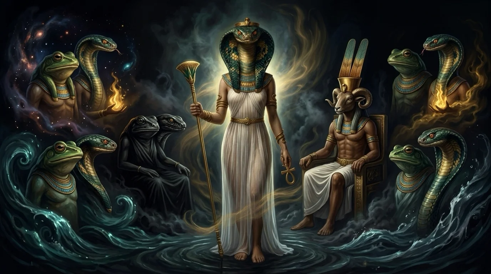
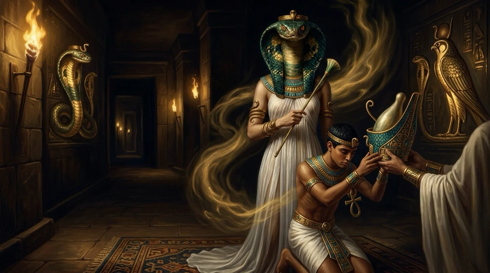
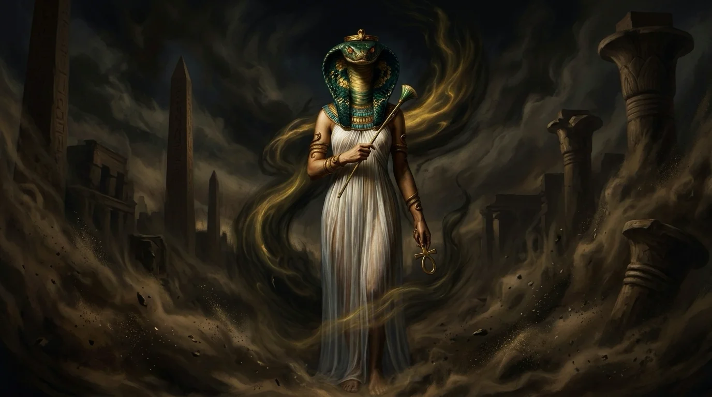
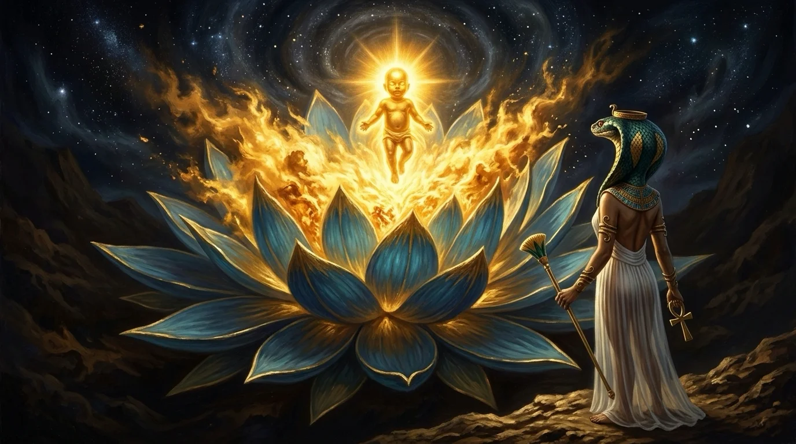
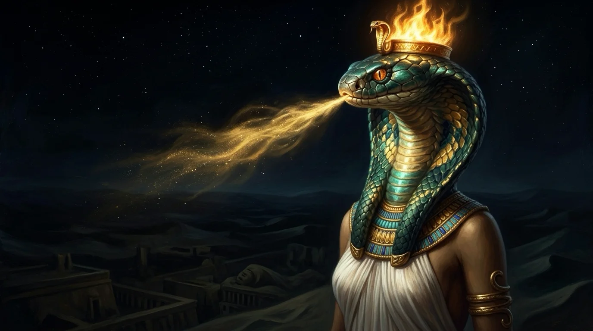

Amaunet, la diosa primordial de lo oculto, señora del aliento invisible que agitó el abismo antes del primer amanecer.
Mucho antes de que existieran las arenas de Egipto, las estrellas del firmamento o el fuego de los dioses solares, el universo entero era un océano negro, espeso y sin orillas. En aquella inmensidad anterior al tiempo, donde no había arriba ni abajo ni latía un solo corazón, reinaba la Ogdóada de Hermópolis: ocho divinidades primordiales agrupadas en cuatro parejas que encarnaban las fuerzas puras del caos. Entre las aguas inertes, la tiniebla absoluta y la infinitud sin forma, se alzaba la figura más enigmática de todas: Amaunet. Los antiguos escribas grabaron su nombre en los muros como *Jmn.t*, una palabra sagrada que significa literalmente «La Oculta», la faz femenina de aquello que existe pero jamás puede ser atrapado por los ojos. Con el cuerpo esbelto de una reina envuelta en lino blanco y la cabeza imponente de una cobra de escamas de esmeralda y oro, ella formaba junto a su consorte, Amón primordial, el corazón secreto del abismo.

Para la sabiduría del Antiguo Egipto, Amaunet representaba un don luminoso e indispensable sin el cual la vida jamás habría brotado. Mientras las demás fuerzas del abismo eran peso muerto, agua estancada y oscuridad inmóvil, Amaunet custodiaba el milagro del movimiento invisible y de la potencialidad creadora. Ella era la brisa secreta que recorría la superficie de las aguas primordiales sin dejar huella, impidiendo que la materia quedara congelada en una muerte eterna. Por eso los sacerdotes de Hermópolis y de Tebas la veneraron como una madre protectora de todo lo que nace. En los Textos de los Sarcófagos y en los bajorrelieves del templo de Luxor, Amaunet extendía su amparo sobre los faraones en el día de su coronación, amamantando a los reyes con leche divina y soplando desde el norte el viento fresco que anunciaba la crecida fértil del Nilo. En su mano izquierda sostenía el *ankh*, la llave dorada del aliento vital, y en la derecha alzaba el cetro de papiro que prometía vigor, juventud y cobijo a las almas justas que cruzaban el umbral de la muerte.

Pero la señora de lo oculto poseía también un rostro sombrío e implacable que infundía un temor reverencial en los mortales. Al ser la dueña de lo que no tiene forma ni rostro visible, Amaunet encarnaba también el vértigo ante la nada y la amenaza perpetua de que el orden del mundo se disolviera de nuevo en el caos original. Su cabeza de cobra real con el capuchón desplegado advertía que el mismo aire invisible que sostiene los pulmones puede convertirse, en un parpadeo, en la asfixia silenciosa de las tumbas o en la tormenta ciega que sepulta reinos enteros bajo la arena. A diferencia de los dioses celestes que caminaban a plena luz, Amaunet jamás ofrecía consuelo directo ni mostraba sus designios: habitaba en la penumbra helada de los santuarios interiores, allí donde ningún hombre común osaba pronunciar su verdadero nombre por miedo a despertar a las serpientes del abismo. Su propia historia sufrió además el golpe de la ambición política: cuando Tebas se alzó como capital del imperio y Amón fue proclamado soberano supremo, los sacerdotes sustituyeron a la antigua diosa serpiente por una nueva esposa real, la poderosa Mut, desplazando a Amaunet hacia las sombras olvidadas del principio del mundo.
Sin embargo, ningún decreto de los templos pudo borrar su hazaña mayor en el mito de la creación de Hermópolis. Cuentan los himnos más antiguos que hubo un instante en que la eternidad inmóvil estuvo a punto de ahogarse en su propio silencio. Las aguas de Nun pesaban como plomo negro y las tinieblas de Kuk aplastaban cualquier chispa de existencia. Fue entonces cuando Amón y Amaunet unieron sus esencias invisibles en las profundidades del océano primordial. Amaunet irguió su cuello de escamas verdes, hizo brillar su diadema de oro en la negrura absoluta y dejó escapar un primer soplo largo, profundo y silencioso sobre la superficie dormida. Aquel viento sin origen agitó el abismo desde sus entrañas. Las corrientes oscuras chocaron entre sí, el lodo sagrado se arremolinó con violencia y de las aguas rotas emergió la primera tierra firme del cosmos: la Colina de las Llamas. Sobre aquel montículo humeante, vigilado por los ojos de ámbar de Amaunet y rodeado por las ocho fuerzas de la Ogdóada, se abrió el gran loto primordial del que brotó por primera vez el niño solar, desgarrando la noche eterna con un estallido de fuego dorado.



Cuando el sol ascendió al firmamento y los dioses jóvenes repartieron las leyes de Egipto, las ocho deidades del origen descendieron a las cavernas sagradas bajo Medinet Habu para dormir el sueño de los siglos. Pero los sabios del Nilo sabían que lo oculto nunca desaparece cuando llega la luz: simplemente se retira detrás del velo de las cosas visibles. Hoy, cuando el viento nocturno silba entre las columnas solitarias de Luxor y levanta una bruma dorada sobre las aguas del río, el eco de Amaunet recuerda al mundo que toda luz nació de un suspiro en la oscuridad, y que lo más poderoso del universo sigue siendo aquello que ningún ojo humano puede ver.